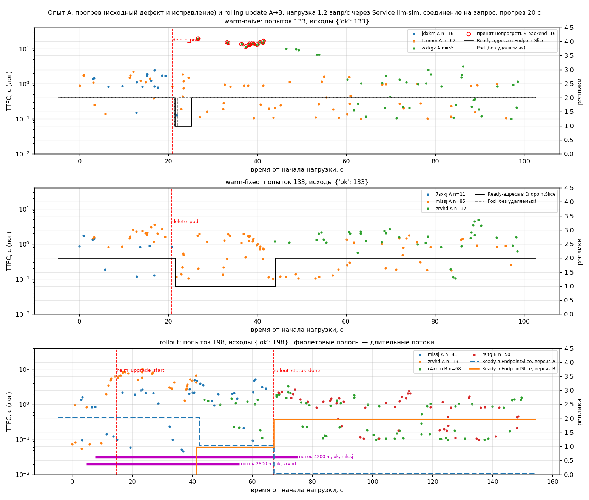
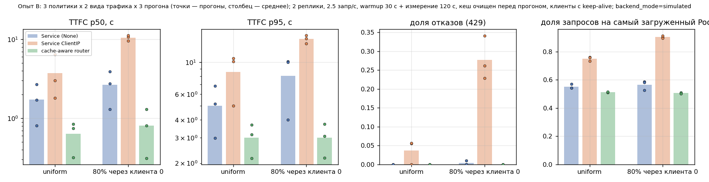
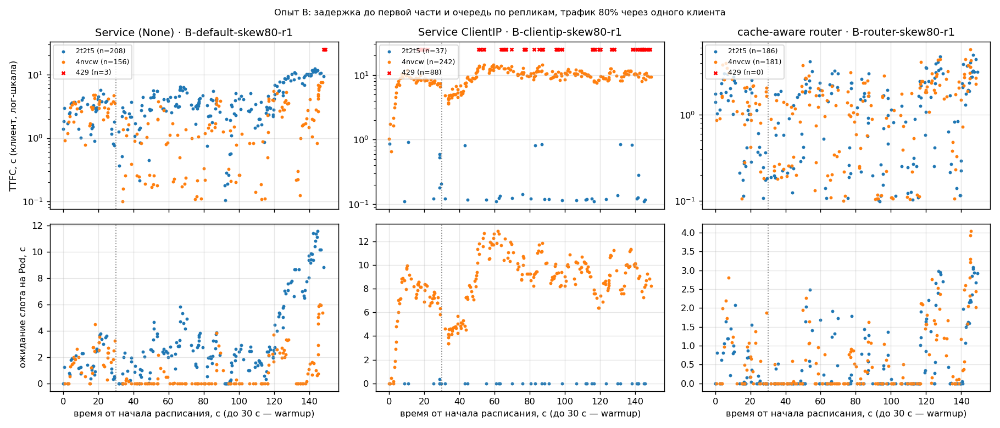
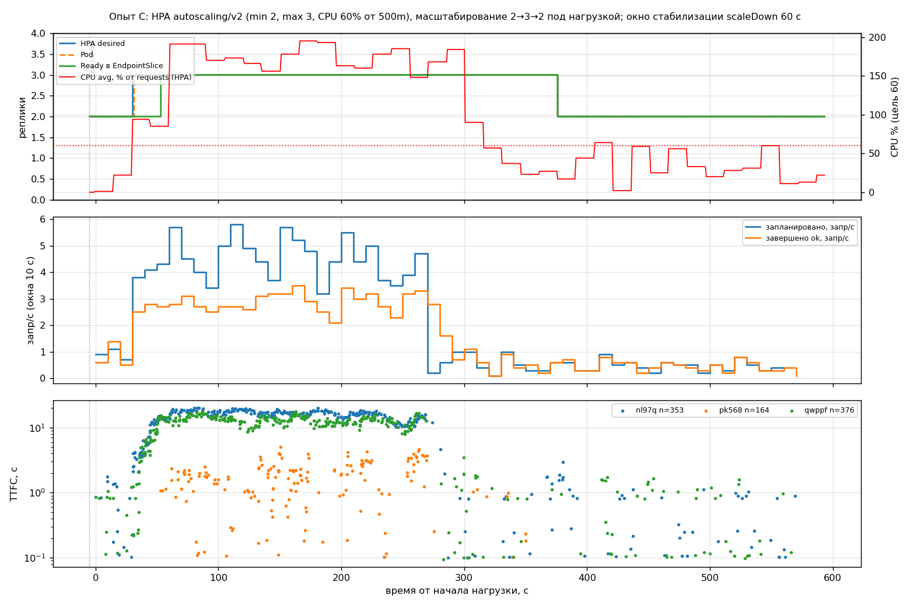
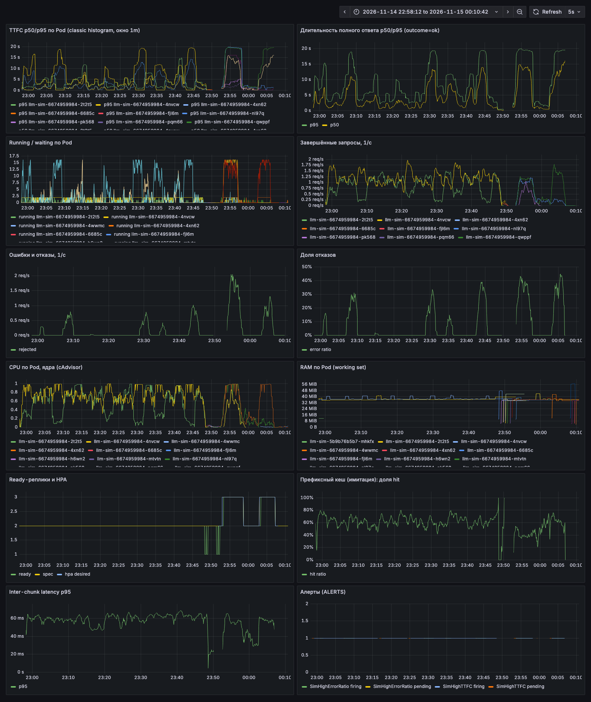

ДЗ 11. Сервис работает, пользователи ждут
МГТУ · MLOps-26 · работа к лекции 11 · стенд kind на ноутбуке · backend_mode = simulated (CPU-имитатор, настоящая модель не подключалась)
СтендОпыт AОпыт BОпыт CМетрикиПроверкиРевью PRОграничения
hw11-sim:0.1.1 использовались во всех сравниваемых прогонах.Итоги
| требование сдачи | где |
|---|---|
| Helm-чарт, Dockerfile, закреплённые зависимости | charts/llm-sim, charts/monitoring, Dockerfile, requirements.lock, pyproject.toml, uv.lock |
| конфигурации мониторинга, экспорт Grafana | charts/monitoring/templates/*.yaml, results/grafana/dashboard-export.json |
| собственные проверки | tests/test_k8s.py, tests/test_local.py, журналы results/checks/ |
| инструкция запуска и удаления, версии, лимиты, размер | README.md, раздел 1, results/env/ |
| сырые результаты | results/requests.jsonl и requests.csv (9029 попыток всех опытов), results/exp*/requests-*.jsonl |
| журналы опытов, HPA/Ready/EndpointSlice | results/exp*/timeline.jsonl, events.jsonl, server-logs/, results/expC/hpa*.txt, results/network/ |
| конфигурации сравниваемых политик | charts/llm-sim/templates/services.yaml, router.yaml, results/expB/services.yaml, helm-values.yaml |
| четыре графика | results/plots/1-…4-*.png (в разделах 2, 3, 4) |
1. Стенд
1.1 Окружение, лимиты, размер
| что | значение |
|---|---|
| хост | Apple M2 Pro, 16 ГБ RAM, macOS 15.3.2 |
| контейнерное окружение | OrbStack 1.8.0, Docker 27.3.1; VM: 10 CPU, 5,19 ГиБ RAM (зафиксировано до запуска, results/env/versions.txt) |
| Kubernetes | kind v0.33.0, один узел kindest/node:v1.37.0@sha256:a1ed56cf…, containerd 2.3.4, kube-proxy iptables, CNI kindnet |
| инструменты | kubectl 1.37.2, Helm 4.3.2, uv 0.12.10, Python 3.12 |
| образы (закреплены) | hw11-sim:0.1.1 (192 МБ, база python:3.12-slim@sha256:5e2bdb1b…, зависимости requirements.lock с хешами: fastapi 0.163.0, uvicorn 0.54.0, httpx 0.28.1, prometheus-client 0.26.0); prom/prometheus:v3.5.0, grafana/grafana:12.1.1, kube-state-metrics:v2.16.0, metrics-server:v0.8.0. Digest всех образов — в results/env/versions.txt |
| ресурсы Pod сервиса | requests 500m CPU / 128 Mi, limits 1 CPU / 256 Mi (факт RSS ≈ 36 Mi) |
| хранение метрик | Prometheus: retention 12 ч и 400 МБ, emptyDir sizeLimit 1 Gi (факт 4,6 МБ); Grafana emptyDir 256 Mi |
| backend | simulated: sim.maxConcurrency=2, maxWaiting=16 (сверх — 429), prefill 10 мс + 300 мс CPU / 1000 символов непокрытого кешем префикса, 10 мс CPU на часть, LRU-кеш 128 ключей, прогрев 20 с |
| генератор | loadgen: пуассоновский поток по seed, 20 пользователей, диалоги по 6 ходов, system-документ 2400 символов + 160 на вопрос, 16–32 части (опыт B); монотонные часы, общий старт по wall clock, запланированное и фактическое время отправки |
| фактический размер стенда | том узла kind 3,8 ГБ (образы в containerd + etcd + журналы), образ узла 0,93 ГБ, образы на хосте ≈ 1,8 ГБ; итого ≈ 6,5 ГБ (results/env/stand-size.txt). Пик памяти узла ≈ 1,6 ГиБ из 5,2 |
Запуск: make up (= scripts/up.sh: kind → сборка образа → kind load → metrics-server →
helm upgrade --install monitoring → helm upgrade --install sim).
Удаление: make down (= kind delete cluster --name hw11 && docker image rm hw11-sim:0.1.1),
освобождает ≈ 4,8 ГБ. Базовые образы удаляются отдельной командой из README, ещё ≈ 1,7 ГБ.
1.2 Helm-чарт charts/llm-sim
- Deployment
llm-sim: 2 реплики,RollingUpdate maxSurge 1 / maxUnavailable 0, ресурсы выше. Под PID 1 работает tini (в чартеargs, а неcommand, чтобы не перекрыть ENTRYPOINT). preStop/drain,terminationGracePeriodSeconds 70. - ConfigMap
llm-sim-config: версия, файл и sha256 модели, прогрев, параметры имитатора. Checksum ConfigMap в аннотации шаблона: изменение values = rollout. - Values:
image.tag,model.version/file/sha256,warmupSeconds,replicaCount,probes.mode,hpa.*. Варианты:values-B.yaml,values-B-broken.yaml,values-naive-probes.yaml,values-hpa.yaml. - Service
llm-sim(sessionAffinity: None) иllm-sim-clientip(ClientIP, 10800 с) над теми же Pod;llm-router(cache-aware маршрутизатор с RBAC на чтение EndpointSlice); StatefulSetloadclient— 4 клиентских Pod с разными IP; HPA (опыт C).
1.3 Версия артефакта
Источник — файл модели-имитатора внутри неизменяемого образа (models/model-A.json, model-B.json; JSON со
словарём ответа и префиксом версии). Ожидаемый sha256 закреплён в values и попадает в ConfigMap. При старте backend
пересчитывает хеш (app/artifact.py, перенесено из release.verify_files ДЗ 8+9+10) и сверяет версию.
При несовпадении Pod жив, но /startup не отвечает 200, и в трафик Pod не попадает (опыт A, 2.3). Каждый ответ несёт
model_version, model_sha256, pod, backend_mode. Восстановление той же версии после замены Pod
проверяет test_3: на новом Pod /version показывает тот же sha256.
Для настоящих весов файл в образе не годится: нужен общий для всех реплик источник. Подойдёт том ReadOnlyMany (NFS/CSI)
с учётом размещения Pod по узлам, либо объектное хранилище с проверкой хеша при загрузке в локальный кеш узла.
ReadWriteOnce-том к нескольким репликам на разных узлах не подключится.
1.4 Связь ответов и журналов
Клиент присылает X-Request-ID (или его генерирует сервис). Заголовки ответа: X-Request-ID, X-Pod, X-Model-Version, X-Backend-Mode.
Первая строка потока — meta (pod, версия, sha256, очередь, кеш), последняя — done. Журнал сервиса — одна JSON-строка
на запрос: request_id, session_id, peer_ip, pod, model_version, model_sha256, warm_at_receive, queue_s, cache, ttfc_s, duration_s, outcome.
История диалога передаётся в запросе (messages), в Pod хранится только кеш префикса, который можно потерять.
Продолжение диалога после удаления отвечавшего Pod проверяет test_3.
1.5 Мониторинг (charts/monitoring)
Prometheus v3.5.0 собирает метрики: (1) с каждого Pod через kubernetes_sd_configs role: pod по аннотации
prometheus.io/scrape, метки pod, app, version; (2) CPU/RAM контейнеров из cAdvisor через proxy API-сервера,
только namespace llm; (3) kube-state-metrics (Ready-реплики, HPA). Интервал 5 с, правила алертов — в том же ConfigMap.
Grafana 12.1.1 получает datasource и дашборд через provisioning. Исходник дашборда —
charts/monitoring/files/llm-sim-dashboard.json (генерирует scripts/gen_dashboard.py), экспорт из работающей Grafana
через API — results/grafana/dashboard-export.json.
2. Опыт A. Прогрев, обновление и откат
Условия для всех частей: прогрев 20 с; нагрузка 1,2 запр/с по детерминированному расписанию
(loadgen.schedule, seed 7, ответы по 8–16 частей); 4 клиентских Pod; обычный Service llm-sim.
Клиенты открывают новое соединение на каждый запрос (--no-keepalive), как за L7-балансировщиком,
который распределяет каждый запрос. Наблюдатель каждые 0,5 с пишет Pod/Ready/EndpointSlice
(timeline.jsonl), журналы всех Pod сохраняются (server-logs/).
Сценарии: scripts/exp_a.py warm-naive|warm-fixed|rollout|broken|kill. Сводка по сырым данным:
analysis/expa_stats.py → results/tables/expA.json.
2.1 Прогрев: исходный дефект и исправление
Гипотеза. Если startup и readiness проверяют только то, что HTTP-процесс поднялся (/health),
новый Pod попадает в EndpointSlice за секунды. Весь прогрев (20 с) он принимает рабочие запросы, и они ждут конца прогрева.
Воспроизведение. Под нагрузкой на 21-й секунде удаляется один из двух прогретых Pod
(kubectl delete pod), Deployment создаёт замену. Время ниже отсчитывается от удаления.
| Момент, с от удаления | исходный дефектvalues-naive-probes.yaml | исправление ( values.yaml, probes: fixed) |
|---|---|---|
| Pod создан / начат прогрев | −0,2 / 3,0 | 0,0 / 2,2 |
| Pod Ready = True и в Ready-адресах EndpointSlice | 4,3 | 23,2 |
прогрев завершён (warmup_done в журнале Pod) | 23,1 | 22,2 |
| первый рабочий запрос на новый Pod | 5,8 | 23,2 |
запросов принято непрогретым backend (warm_at_receive=false) | 16 из 55 | 0 из 37 |
| TTFC этих запросов | 11,4–19,3 с | — |
| весь прогон: попыток / ok / TTFC p50 / p95 | 133 / 133 / 0,90 / 14,5 с | 133 / 133 / 1,12 / 2,7 с |
Причина. В naive-режиме у startupProbe и readinessProbe путь /health. Он отвечает 200,
как только запущен uvicorn, а прогрев идёт в фоновом потоке. Kubernetes считает Pod готовым, EndpointSlice публикует
адрес, kube-proxy отправляет на него новые соединения. Запросы встают в ожидание warm_event.
Изменение. У проверок разные назначения:
| probe | путь | что означает | тайм-ауты |
|---|---|---|---|
| startup | /startup | артефакт проверен по sha256 и прогрев завершён (один раз за жизнь процесса); пока нет — liveness/readiness не выполняются | period 2 с × failureThreshold 30 = 60 с ≥ 3× прогрева 20 с; timeout 2 с |
| readiness | /ready | прогрет и не в режиме drain: можно давать рабочий трафик | period 2 с, failureThreshold 2 → снятие ≤ 4 с |
| liveness | /health | процесс и цикл событий живы, обработка не зависла дольше 60 с; от прогрева не зависит, чтобы долгий прогрев не вызывал перезапусков | period 10 с × 3, timeout 3 с |
Повтор. Тот же сценарий и то же расписание: новый Pod стал Ready через 1 с после конца прогрева и не получил ни одного запроса до него. p95 TTFC упал с 14,5 до 2,7 с. Оставшиеся 2–4 с — время, пока одна реплика обслуживает весь поток с холодным кешем.
Если оставить keep-alive (results/expA/warm-naive-keepalive, первая попытка, 3 запр/с), дефект проявляется
слабее и позже: kube-proxy выбирает Pod только при новом TCP-соединении, поэтому новый Pod получил 5 непрогретых запросов,
и не сразу, а после того как у клиентов истекли простаивающие соединения. Keep-alive не исправляет дефект, а прячет его в зависимость от поведения клиентов.

results/expA/*/timeline.jsonl, requests-*.jsonl.2.2 Rolling update A → B под нагрузкой с длительными потоками
Стратегия maxSurge: 1, maxUnavailable: 0. При завершении Pod срабатывает preStop: GET /drain:
Pod переходит в drain, /ready начинает отвечать 503, ответы получают Connection: close, затем 6 с ожидания,
пока адрес уйдёт из EndpointSlice. После этого приходит SIGTERM (через tini, PID 1), и uvicorn ждёт активные ответы до 50 с.
terminationGracePeriodSeconds: 70 больше суммы 6 + 50 с с запасом. До начала обновления запущены два длительных потока:
2800 частей (≈50 с) и 4200 частей (≈67 с). Отсчёт — от helm upgrade -f values-B.yaml.
| Pod | версия | Ready | удаление / drain | активных при drain | вне EndpointSlice | процесс завершён |
|---|---|---|---|---|---|---|
| …c4xnm | B | 27,5 | — | — | — | — |
| …zrvhd | A | до начала | 27,5 / 26,7 | 2 (в т.ч. поток 2800) | 27,5 | 41,0 |
| …rsjtg | B | 52,5 | — | — | — | — |
| …mlssj | A | до начала | 52,5 / 52,2 | 2 (в т.ч. поток 4200) | 52,5 | 60,4 |
Поток 2800 частей на zrvhd завершился на 40,9 с, процесс остановился на 41,0 с. Поток 4200 частей на
mlssj завершился на 60,3 с, процесс остановился на 60,4 с. Оба получили все части и строку done.
Итог полного прогона: 198 попыток, 198 ok, 0 HTTP 5xx, 0 оборванных потоков, 0 тайм-аутов
(80 ответов версии A, 118 версии B). Новая версия получала трафик только после прогрева (Ready через 26,4 с после создания).
2.3 Заведомо неготовая B и откат
values-B-broken.yaml: в B закреплён неверный sha256. Новый Pod …mhkfx пишет
load_failed: ValueError: sha256 артефакта model-B.json = 30db7df5ad0e…, ожидался 0…, /startup никогда не
отвечает 200. За 70 с Pod ни разу не стал Ready и не попал в EndpointSlice. Startup probe исчерпала 60 с, и kubelet один
раз перезапустил контейнер. Из-за maxUnavailable: 0 старые Pod A не удалялись, rollout завис.
Все 98 ответов в этом интервале — версия A. На 70-й секунде выполнен helm rollback sim 16
(история: rev 17 — B-broken, rev 18 — «Rollback to 16»), неготовый Pod удалён через 9 с.
После отката все 72 фактических ответа — model_version=A, sha256 f5518680fa9a….
Прогон: 196 попыток, 196 ok.
2.4 Принудительное завершение процесса (kill -9)
Под нагрузкой (1,2 запр/с и три длительных потока по 600 частей) выполнено
kubectl exec … -- sh -c 'kill -9 $(cat /tmp/app.pid)': процесс сервиса убит без drain. Клиент делает
один повтор, и каждый повтор записан как отдельная попытка (attempt=1).
| показатель | значение |
|---|---|
оборвано потоков на убитом Pod (200, но без done) | 2; длительный поток получил 306 из 600 частей, его повтор на другом Pod — ok |
| ошибки соединения (запрос не начат) | 3 (2 первые попытки + 1 повтор) |
| обнаружение отказа: Pod исчез из Ready-адресов EndpointSlice | через 1,4 с |
| восстановление: контейнер перезапущен (restartCount 1), прогрет, снова Ready | через 24,8 с |
| отказы 429 на оставшейся реплике, пока вторая прогревалась | 34 попытки (18 первых + 16 повторов) |
| логических запросов / завершились ok (с учётом повторов) | 139 / 122; попыток 161 |
Вывод: rollout корректен только при плановом завершении. При падении процесса активные потоки теряются, это и есть
граница graceful shutdown. Немедленный повтор после 429 попадает в ту же перегруженную реплику (16 из 22 повторов
снова получили 429): повторы усиливают давление, нужны backoff и Retry-After.
Оставшиеся ограничения. Один узел kind: нет сетевых задержек между узлами, при потере узла сработает другой
механизм. Grace period 70 с выбран под потоки до ~60 с; более длинный поток при плановом выводе будет оборван.
kill -9 дал 1 перезапуск; сценарий OOMKilled отдельно не проверялся.
3. Опыт B. Привязка к Pod и горячая реплика
Гипотеза. Привязка по IP клиента направляет весь трафик «тяжёлого» клиента в одну реплику. Средняя загрузка двух реплик остаётся приемлемой, но у горячей растут очередь и TTFC, вплоть до 429, а у второй есть свободная ёмкость.
3.1 Сеть и что видит механизм привязки
- kube-proxy iptables. У
llm-sim-clientipна каждый endpoint есть правило-m recent --rcheck --seconds 10800 --rsource. Первое соединение с нового IP выбирает endpoint случайно (statistic --probability 0.5), и IP запоминается в таблицеxt_recentэтого endpoint (results/network/affinity-state-expB.txt). - Механизм видит IP клиентского Pod (10.244.0.21/.23/.24/.25): трафик Pod→ClusterIP внутри CIDR кластера не маскарадится
(MASQ только для
! -s 10.244.0.0/16). Этот же IP записан в журнале сервиса какpeer_ip. - Во время опыта таблица привязки: клиенты 0, 2, 3 (10.244.0.25/.23/.21) → Pod
…4nvcw, клиент 1 (10.244.0.24) →…2t2t5. Привязка держится 3 ч, поэтому она одинакова во всех трёх повторах. В первой попытке (до перезапуска опыта) все 4 клиента попали на один Pod (affinity-state-first-attempt.txt), то есть исход случаен и задаётся первым соединением. - Клиенты используют HTTP keep-alive (пул httpx до 32 соединений, простой 5 с). Даже у обычного Service выбор Pod происходит на соединение, а не на запрос: распределение зависит от числа одновременно открытых соединений.
3.2 Постановка (одинакова для всех политик)
- Одни и те же 2 реплики, один образ и values. Политики: Service (None) →
llm-sim; Service ClientIP →llm-sim-clientip; cache-aware router →llm-router(исправление). - Трафик: uniform — 20 пользователей поровну на 4 клиентских Pod; skew80 — 16 из 20 пользователей у клиента 0
(≈ 80% запросов). Для данного повтора и вида трафика одно и то же расписание (
results/expB/schedule-*.json: запросы, длины входов,max_chunks16–32, моменты отправки) получают все три политики. Порядок политик внутри повтора сдвигается по кругу. Повторы r1–r3 используют seed 101–103. - Интенсивность 2,5 запр/с (пуассоновский поток). Явное начальное состояние:
POST /admin/reset-cacheна обоих Pod перед каждым прогоном, затем 30 с warmup (не входят в метрики) и 120 с измерения. Запланированное и фактическое время отправки сохранены: p95 отставания генератора ≤ 12 мс. - Имитация префиксного кеша (явно обозначена,
app/backend.py): LRU на 128 ключей на Pod; ключ — sha256 префикса на каждой границе сообщения. Cache miss стоит 10 мс + 300 мс CPU на 1000 непокрытых символов (новый диалог ≈ 2600 символов, ≈ 0,8 с). Cache hit — только новые ≈ 240 символов, ≈ 0,08 с. Плюс 10 мс CPU на каждую из 16–32 частей. Одновременно обрабатывается 2 запроса на Pod, в очереди до 16, сверх — 429. Числа относятся к модели нагрузки имитатора.
3.3 Результаты: 3 политики × 2 трафика × 3 прогона
| политика | трафик | TTFC p50, с среднее [мин–макс] | TTFC p95, с | полный ответ p95, с | доля 429 | доля cache hit | доля запросов на самый загруженный Pod | ok / попыток (r1, r2, r3) |
|---|---|---|---|---|---|---|---|---|
| Service (None) | uniform | 1,73 [0,81–2,68] | 4,99 [2,98–6,84] | 5,51 | 0 | 0,61 | 0,55 | 291/291, 263/263, 299/299 |
| Service ClientIP | uniform | 3,75 [1,81–6,43] | 8,57 [4,99–10,61] | 9,04 | 0,037 | 0,74 | 0,75 | 275/291, 263/263, 282/299 |
| cache-aware router | uniform | 0,64 [0,32–0,85] | 3,00 [2,16–3,68] | 3,50 | 0 | 0,67 | 0,51 | 291/291, 263/263, 299/299 |
| Service (None) | skew80 | 2,66 [1,30–3,90] | 8,03 [4,00–10,11] | 8,55 | 0,003 | 0,57 | 0,56 | 288/291, 263/263, 299/299 |
| Service ClientIP | skew80 | 10,54 [9,61–11,24] | 14,46 [13,43–15,33] | 14,96 | 0,277 | 0,64 | 0,90 | 215/291, 203/263, 197/299 |
| cache-aware router | skew80 | 0,81 [0,31–1,31] | 3,00 [2,18–3,74] | 3,55 | 0 | 0,66 | 0,51 | 291/291, 263/263, 299/299 |
Тайм-аутов (30 с), 5xx и оборванных потоков не было ни в одном прогоне; все отказы — 429 из-за полной очереди. Перцентили
посчитаны только по успешным ответам, число наблюдений — в последнем столбце. По прогонам:
results/tables/expB-runs.json (распределение по Pod, клиент→Pod, очередь), сырьё — results/expB/requests-*.jsonl.

3.4 Горячая реплика ждёт, у другой свободная ёмкость
Прогон B-clientip-skew80-r1. Pod …4nvcw получил 90% запросов: очередь 8–13 с, TTFC p95 13,4 с, 76 отказов 429.
Pod …2t2t5 получил 10%: ожидание слота ≈ 0, TTFC p95 0,84 с, при этом его CPU простаивал. При равномерном трафике
(B-clientip-uniform-r1) привязка 3:1 даёт ту же картину: 73% / 27%, p95 11,3 с против 1,7 с, 16 отказов на горячей реплике.
Суммарной ёмкости двух реплик (≈ 2 запр/с каждая по калибровке) на 2,5 запр/с хватает: по средней загрузке перегрузки не видно.

meta) по репликам и времени.
Красные крестики — 429. Слева направо: обычный Service, ClientIP, cache-aware router.3.5 Где ожидаемый перекос не возник
Обычный Service при skew80 (B-default-skew80-*): 80% запросов идут через клиента 0, но доли реплик 52–59%, а не 80/20.
Трасса запросов показывает, что клиент 0 разошёлся по обеим репликам (r1: 145 запросов на …2t2t5 и 89 на …4nvcw).
Он держит несколько keep-alive соединений одновременно (до 32 в пуле, параллельные потоки), каждое новое соединение kube-proxy
направляет случайно, а простаивающие соединения истекают через 5 с и открываются заново. Перекос по клиенту не превращается
в перекос по Pod. Цена — локальность: доля cache hit 0,57 против 0,66–0,74, потому что ходы диалога попадают на разные реплики
и платят полный промах. Остаточный дисбаланс 58/42 в r1 к концу прогона дал очередь до 11 с на одной реплике (график 2, слева).
Соединения распределяются случайно, а не по загрузке.
ClientIP при uniform мог дать и 2:2 — тогда перекоса бы не было. Здесь выпало 3:1, а в первой попытке 4:0. Исход определяется первым соединением каждого клиента и держится 3 ч. Поэтому ClientIP ведёт себя по-разному на разных запусках: это недетерминированная конфигурация, а не политика балансировки.
3.6 Исправление и его защита
Выбран маршрутизатор с политикой cache-aware + bounded load (app/router.py, Service llm-router).
Подход тот же, что у cache_aware router SGLang Model Gateway и prefix-aware scoring в Gateway API Inference Extension из лекции.
- Ключ привязки —
session_idдиалога, а не IP. Pod выбирается rendezvous-хешем из Ready-адресов EndpointSlice (читаются из API каждую секунду, без 30-секундного кеша DNS). Пользователи «тяжёлого» клиента распределяются по репликам, но каждый диалог остаётся на одной реплике и попадает в свой префикс. - Если у предпочтительной реплики в работе на ≥ 2 запроса больше, чем у наименее загруженной (
BALANCE_THRESHOLD=2), запрос уходит на наименее загруженную. Один промах (≈ 0,8 с) дешевле ожидания в очереди, где каждый запрос ≈ 0,3–0,5 с. Решения: ≈ 83–87%affinity, 13–17%overflow(заголовокX-Route-Reason). - Маршрутизация на каждый запрос: keep-alive клиента к маршрутизатору не закрепляет клиента за Pod.
Результат повтора на тех же расписаниях: TTFC p50 0,64–0,81 с, p95 3,0 с в обоих видах трафика, 0 отказов во всех 6 прогонах, распределение 50/50 ± 1,5%. Доля cache hit 0,66–0,67 — выше, чем у обычного Service (0,57–0,61), и ниже, чем у ClientIP (0,64–0,74). ClientIP получает лучшую локальность ценой очереди на одной реплике. Против ClientIP при skew80: p95 ниже в 4,8 раза, отказов 0 вместо 28%. Против обычного Service: p95 ниже в 1,7–2,7 раза при той же нагрузке.
Что потребует проверки на настоящем inference engine: реальная доля попаданий по метрикам engine (у vLLM/SGLang кеш блочный, а вытеснение зависит от KV-памяти и батча); сигнал загрузки — очередь и KV-утилизация engine, а не счётчик маршрутизатора; порог перехода в TTFT, а не в числе запросов; несколько реплик маршрутизатора и согласованность их оценок; влияние continuous batching, при котором «2 в работе» и «16 в работе» стоят по-разному.
4. Опыт C. HPA и мониторинг
4.1 Конфигурация и условия HPA
- Resource metrics API доступен:
v1beta1.metrics.k8s.io(metrics-server v0.8.0,--kubelet-insecure-tlsдля kind) —AVAILABLE True.requests.cpu = 500mу единственного контейнераsim(results/expC/metrics-api-check.txt). autoscaling/v2,minReplicas 2,maxReplicas 3, метрикаResource cpu, цель averageUtilization 60% (= 300m в среднем на Pod).behavior.scaleUp: окно стабилизации 0 с, не более 1 Pod за 15 с;scaleDown: окно стабилизации 60 с (по умолчанию 300 с; уменьшено, чтобы уложиться в опыт), не более 1 Pod за 15 с. Файлы:charts/llm-sim/templates/hpa.yaml,values-hpa.yaml, снимкиresults/expC/hpa.yaml,hpa-describe.txt.- Нагрузка вычислительная: prefill и части ответа тратят CPU-время потока (
burn_cpuпоtime.thread_time()), поэтому рост CPU виден cAdvisor и metrics-server.
4.2 Масштабирование 2 → 3 → 2 (равномерный трафик через Service llm-sim)
Профиль: 0–30 с — 1 запр/с, 30–270 с — 4,5 запр/с, 270–570 с — 0,5 запр/с. Время отсчитывается от начала нагрузки.
| событие | t, с | комментарий |
|---|---|---|
| HPA desired 2 → 3 | 30,3 | средняя CPU 94% от requests при цели 60% |
новый Pod …pk568 создан | 29,6 | creationTimestamp с точностью до секунды |
| новый Pod Ready (startupProbe дождалась прогрева) и в EndpointSlice | 53,2 | 23,6 с от создания, из них 20 с прогрев |
| пик средней CPU | 195% | все три реплики упираются в limit 1 CPU |
| снижение нагрузки до 0,5 запр/с | 270 | |
| HPA desired 3 → 2 | 376,1 | фактически 106 с после снижения: окно стабилизации 60 с + задержка метрик (окно metrics-server ≈ 15–30 с) + период HPA 15 с |
Pod …pk568 удалён (drain + завершение) | 384,3 | возврат к минимуму 2 |
4,5 запр/с сознательно выше ёмкости даже трёх реплик: нужно было увидеть упор в maxReplicas и сработку алертов.
Поэтому 355 из 1248 попыток получили 429. Новая реплика за время работы получила 164 запроса против 680 и 404 у старых:
клиенты держат keep-alive соединения, а kube-proxy отправляет на новый Pod только новые соединения.

results/expC/timeline.jsonl, requests-C-scale.jsonl, prometheus-range.json.4.3 Горячая реплика повторно (ClientIP, 80% через клиента 0, HPA включён)
scripts/exp_c.py hot: 2,5 запр/с в течение 200 с через llm-sim-clientip. HPA перешёл 2 → 3 на 30,4 с при средней CPU 119%.
Горячая реплика упиралась в limit (≈ 200% от requests), холодная была почти свободна, и среднее ушло выше 60%. Новый Pod
…4wwmc стал Ready на 55,0 с и не получил ни одного запроса: распределение 459 / 45 / 0. Отказов 150 из 504 (30%), TTFC p95 14,3 с.
Масштабирование ничего не исправило.
Когда средняя CPU вызывает масштабирование. HPA считает desired = ceil(current × avg(utilization) / target) по
среднему всех Pod. Одна горячая реплика при пустой второй поднимает среднее выше цели, только если она одна «весит»
больше, чем 2 × 60% = 120% от requests. В нашем случае limit 1 CPU = 200% от requests, поэтому масштабирование случилось. С limit,
близким к request, или с тремя и более репликами одна горячая реплика среднее не сдвинет, и HPA ничего не заметит.
Почему новая реплика получает мало запросов: привязка ClientIP хранится в xt_recent 3 ч, и на новый endpoint попадут только
новые IP клиентов. Keep-alive у обычного Service даёт тот же эффект слабее: новый Pod получает только новые соединения (опыт 4.2, 164 запроса).
Поэтому масштабирование надо дополнять маршрутизацией по загрузке (опыт B) и сигналом по очереди или задержке на каждом Pod, а не по средней CPU.
4.4 Два алерта
# charts/monitoring/templates/prometheus.yaml (правила вычисляются каждые 5 с)
SimHighTTFC: histogram_quantile(0.95, sum by (le) (rate(sim_ttfc_seconds_bucket[1m]))) > 2
and on() sum(increase(sim_ttfc_seconds_count[1m])) >= 20 for: 30s
SimHighErrorRatio: sum(rate(sim_requests_total{outcome!="ok"}[1m])) / sum(rate(sim_requests_total[1m])) > 0.05
and on() sum(increase(sim_requests_total[1m])) >= 20 for: 30s
Порог задержки — p95 TTFC 2 с. Минимальный объём наблюдений — 20 ответов в окне 1 мин, чтобы один медленный запрос при
малом трафике не поднимал алерт. Период удержания — 30 с. Отказы (429, 503) и оборванные потоки входят в долю ошибок.
Переходы, снятые опросом /api/v1/alerts каждые 2 с (results/expC/events.jsonl), и ряд ALERTS из query_range
(prometheus-range.json) за опыт 4.2:
| t, с | SimHighTTFC | SimHighErrorRatio |
|---|---|---|
| 41,9 | inactive → pending | |
| 66,7 | inactive → pending | |
| 70,7 | pending → firing (через 28,8 с) | |
| 95,4 | pending → firing (через 28,7 с) | |
| 331,5 | firing → inactive (61 с после снижения нагрузки) | |
| 351,7 | firing → inactive | |
| 410,0 → 420,2 | pending → inactive (кратковременный всплеск не продержался 30 с, алерта нет) |
Время pending → firing ≈ 29 с, а не ровно 30: состояние опрашивалось раз в 2 с, правила вычисляются раз в 5 с. В опыте 4.3 алерты перешли в firing на 48,5 с и 83,0 с и вернулись в норму после окончания нагрузки (257,6 и 263,6 с).
5. Что и как измерялось
5.1 Клиентский журнал (сырьё: results/requests.jsonl, results/requests.csv)
Каждая попытка — одна строка: run, id, attempt, request_id, session, turn, phase, client, client_pod, max_chunks, prompt_chars,
scheduled_wall, send_wall, send_lag_s, status, outcome, error, pod, model_version, model_sha256, backend_mode, route_reason, cache,
queue_s, warm_at_receive, ttfc_s, inter_chunk_mean_s, duration_s, done_wall, chunks, got_done.
Длительности считаются по time.monotonic() клиента от момента отправки:
- TTFC = t(первая строка
chunk) − t(отправка). Строкаmetaсодержательной частью не считается. - inter-chunk latency (среднее) = (t(последняя часть) − t(первая часть)) / (N − 1), только для завершённых ответов с N ≥ 2;
при N = 1 значение отсутствует. Распределение интервалов на сервере — гистограмма
sim_inter_chunk_seconds. - send_lag_s = фактическая − запланированная отправка, отставание самого генератора. Во всех прогонах опыта B p95 ≤ 12 мс, максимум ≤ 0,04 с, то есть генератор успевал. В опыте A (kill) максимум 7,6 с — это повторы, отправленные после неудачной первой попытки.
Учёт исходов (loadgen.client.classify, проверка test_4): ok — 200 и строка done с полным числом частей;
rejected — 429 (очередь полна); http_5xx; aborted — 200, но поток оборван до done;
timeout — превышено время попытки (30 с); conn_error — запрос не начат. Сводка считает отдельно:
запланировано (строки расписания), отправлено (попытки), завершено (ok), отклонено, оборвано, просрочено.
Повторы — отдельные попытки с attempt ≥ 1, логический успех считается по id.
Перцентили p50/p95 — nearest-rank только по успешным, всегда вместе с числом наблюдений и долей отказов.
5.2 Prometheus
Classic histograms: sim_ttfc_seconds, sim_request_duration_seconds{outcome}, sim_queue_wait_seconds
(границы .01 .025 .05 .1 .2 .3 .5 .75 1 1.5 2 3 4 6 8 12 20 30 45 60 с, мельче там, где лежит основная масса TTFC);
sim_inter_chunk_seconds (2 мс–2 с). Счётчики: sim_requests_total{outcome}, sim_prefix_cache_lookups_total{result}.
Gauges: sim_running, sim_waiting, sim_ready. Метки ограничены: model_version, outcome, result,
а pod/version добавляет relabel. Request ID и session ID — только в журнале, не в метках.
Перцентиль считается из суммарных bucket-счётчиков всех Pod с сохранением le:
histogram_quantile(0.95, sum by (le) (rate(sim_ttfc_seconds_bucket[1m]))) # дашборд, алерт histogram_quantile(0.95, sum by (le, pod) (rate(sim_ttfc_seconds_bucket[1m]))) # по репликам histogram_quantile(0.95, sum by (le) (increase(sim_ttfc_seconds_bucket[<окно>s]))) # сверка за прогон
Сверка PromQL с журналами (analysis/promql_compare.py → results/tables/promql-vs-client.json). Окно — весь прогон
опыта B, от первой отправки −2 с до последнего завершения +6 с. Прогоны разделены паузой, поэтому набор ответов один и тот же.
TTFC сервера — от приёма запроса до первой части, TTFC клиента дополнительно включает сеть и установку соединения.
| прогон | окно | ответов ok: клиент / журнал сервера / Prometheus | p50: PromQL / сервер / клиент | p95: PromQL / сервер / клиент | корзина p95 |
|---|---|---|---|---|---|
| B-router-uniform-r3 | 157 с | 372 / 372 / 381,1 | 0,943 / 0,950 / 0,971 | 3,878 / 3,798 / 3,847 | (3, 4] |
| B-default-skew80-r3 | 160 с | 372 / 372 / 383,0 | 3,717 / 3,673 / 3,702 | 10,74 / 9,685 / 9,719 | (8, 12] |
| B-clientip-skew80-r3 | 167 с | 261 / 261 / 269,2 | 10,08 / 10,38 / 10,40 | 18,73 / 15,13 / 15,15 | (12, 20] |
Сервер и клиент расходятся на 3–35 мс: это сеть и accept. Prometheus показывает на 2–3% больше наблюдений:
increase() экстраполирует счётчик на края окна по ближайшим отсчётам (scrape 5 с). Перцентиль PromQL точен до корзины
и внутри неё интерполируется линейно. В узких корзинах (≤ 1 с) ошибка ≤ 0,08 с, в широкой корзине 12–20 с p95 завышен на 3,6 с
(18,7 против 15,1). Для порога алерта 2 с это неважно: граница 2 с совпадает с границей корзины. Для отчёта о хвосте нужны
более узкие корзины в диапазоне 8–20 с или native histograms.
5.3 Дашборд
Панели: TTFC p50/p95 по Pod; длительность полного ответа p50/p95; running/waiting по Pod; завершённые запр/с по Pod;
ошибки и отказы по исходу; доля отказов; CPU по Pod (cAdvisor); RAM (working set); Ready-реплики, spec и HPA desired;
доля попаданий имитации кеша; inter-chunk p95; ALERTS. Снимок после опытов: results/grafana/dashboard.png,
экспорт JSON: results/grafana/dashboard-export.json.

hw11-llm-sim за период опытов B и C
(снимок headless Chrome; время на осях — MSK).6. Собственные проверки
Команды: make test-k8s (tests/test_k8s.py, обращается к сервису в Kubernetes из клиентского Pod через
kubectl exec) и make test-local (tests/test_local.py). Журналы: results/checks/.
| # | проверка | что подтверждает | результат |
|---|---|---|---|
| 1 | test_1_warming_pod_gets_no_traffic (k8s) | Удаляет Pod. Пока /startup нового Pod ≠ 200 (запрос по IP Pod),
он не Ready и отсутствует в Ready-адресах EndpointSlice. После прогрева появляется. В журнале нет warm_at_receive=false |
FAILED на исходном дефекте: «llm-sim-9d77b8689-kvs87 прогревается (/startup=503), но уже в Ready EndpointSlice»
(test_k8s-naive-probes.log); PASSED после исправления (test_k8s-fixed-probes-repeat.log) |
| 2 | test_2_loaded_version_matches_release (k8s) | 12 фактических ответов через Service: model_version и model_sha256
совпадают с текущим релизом Helm (ConfigMap), ответили обе реплики, backend_mode=simulated. Запуск после цепочки
A (rev 24) → B (до отката /version отвечал model_version B, sha 30db7df5…) → helm rollback sim 24
(test_k8s-version-after-rollback.log) | PASSED |
| 3 | test_3_dialog_survives_pod_replacement (k8s) | Ход 1 через ClientIP-Service, удаление ответившего Pod,
ход 2 с историей в запросе. Отвечает другой Pod, контрольная строка диалога сохранена, версия и sha256 те же.
Pod-замена поднимает тот же sha256 (/version) | PASSED |
| 4 | test_4_failure_accounting (local) | Генератор против поддельного сервера: 200, 429, 500, обрыв потока посередине,
обрыв первой попытки с успешным повтором, зависание дольше тайм-аута. Сводка: 11 попыток, 6 логических, ok 2,
rejected 2, http_5xx 2, aborted 3, timeout 2; повтор учтён отдельной попыткой; перцентили только по 2 успешным | PASSED |
| 5 | test_5_two_dialogs_are_isolated (k8s, ×2: Service и router) | Диалоги с контрольными строками CTL-ALPHA-7Q и
CTL-BRAVO-3Z чередуются 3 хода через одну точку входа. В каждом ответе только своя строка и свой session_id | PASSED |
| + | маршрутизатор, LRU-кеш, проверка хеша артефакта (local) | affinity/overflow при пороге; вытеснение при ограниченном размере; неверный sha256 → ошибка | PASSED |
7. Ревью PR «Навсегда закрепить диалог за Pod»
Решение: Request changes. Жёсткое закрепление отклоняю. Предлагаю мягкую привязку и допуск по ожидаемому времени до первой части.
При заданных условиях запрос идёт на B. На A есть префикс, но очередь 3 с, и ожидаемый TTFC ≈ 3 с плюс короткий prefill
по кешу, то есть ≈ 3,1 с. На B очереди нет, пересчёт занимает 0,8 с, TTFC ≈ 0,8 с. Закрепление выгодно, только пока
ожидание(A) + prefill_hit < ожидание(B) + prefill_miss. Правило выбора:
argmin(оценка ожидания + стоимость непокрытого кешем префикса). Предпочтительная реплика определяется хешем
session_id, а не IP клиента. Так работает маршрутизатор cache_aware из опыта B: он отказывается от
предпочтительной реплики при разнице загрузки ≥ 2 запросов. ClientIP-привязка в том же опыте закрепила всех клиентов
за одним Pod (раздел 3): очередь и 429 на одной реплике, вторая простаивала.
Каких измерений не хватает в PR: (1) распределение ожидания на A во времени, а не снимок «3 с»; (2) зависимость пересчёта на B от длины префикса и загрузки B (0,8 с получены на свободной реплике); (3) доля попаданий в кеш и TTFC p50/p95 по репликам до и после изменения, при одном расписании и ≥ 3 прогонах; (4) запас KV-памяти на B: не вытеснит ли перенос чужие префиксы; (5) как часто диалог возвращается: после переноса следующие ходы идут на B, и кеш на B окупается; (6) отказы и тайм-ауты: при жёсткой привязке отказ одной реплики видят все её диалоги.
Допуск нового запроса. Очередь на реплике ограничена (maxWaiting=16, сверх — 429). Маршрутизатор не
отправляет запрос туда, где ожидание больше бюджета TTFC или больше пересчёта на наименее загруженной реплике плюс запас.
Если бюджет не держит ни одна реплика, клиент сразу получает 429 с Retry-After. Это лучше, чем 30 с ожидания и тайм-аут.
Повторы клиента ограничены, с backoff, и учитываются отдельными попытками. Опыт A (2.4) показал: немедленный повтор после
429 снова получает 429.
Восстановление диалога после потери A. История хранится вне Pod: в запросе или во внешнем хранилище. Любой Pod
восстанавливает диалог ценой одного пересчёта префикса (≈ 0,8 с); это проверяет test_3. После исчезновения A из
EndpointSlice rendezvous-хеш переносит на соседа только диалоги A, остальные сохраняют привязку и кеш.
Уже начатый потоковый ответ не переносится и дописывается на своей реплике. При плановом выводе это обеспечивают preStop/drain и grace period: в опыте A потоки 50–67 с пережили rollout. Если процесс упал (опыт A, kill -9), поток считается оборванным. Повтор допустим только как новая попытка с новым request ID. Клиент не склеивает молча два ответа: он показывает обрыв или явно запрашивает продолжение с уже полученным текстом в истории.
Кейс из лекции. Слайд 079 лекции: Anthropic, «A postmortem of three recent issues», 17.09.2025, первичный источник: anthropic.com/engineering/a-postmortem-of-three-recent-issues. Часть запросов Sonnet 4 по ошибке маршрутизировалась на серверы с конфигурацией контекста 1M. Маршрутизация была sticky, поэтому пользователь, однажды попавший на такой сервер, продолжал на него попадать. После изменения балансировки 29 августа доля затронутых запросов выросла с 0,8% до 16%. Для нашего PR это значит: закрепление усиливает дефект одной реплики для всех привязанных к ней диалогов. Привязка должна быть мягкой и пересматриваться на каждом запросе — по здоровью, очереди и версии реплики. Это же подтверждает Google Inference Gateway (слайд 070): маршрутизация с учётом и префикса, и загрузки подняла долю попаданий в кеш с 35% до 70% и снизила p95 TTFT на 52%.
8. Оставшиеся ограничения
- Все числа относятся к имитатору. Кеш — LRU по ключам на границах сообщений, а не KV-блоки в памяти GPU. Стоимость промаха линейна по символам. Нет батчинга: два слота делят одно ядро (GIL + CPU limit 1). На настоящем inference engine (vLLM/SGLang) нужно отдельно проверить: долю попаданий префиксного кеша по метрикам engine, TTFT/TPOT по фактическим токенам, влияние continuous batching на ожидание, вытеснение KV при переносе диалогов, время загрузки весов на прогреве.
- Один узел kind: нет межузловой сети, привязки Pod к узлу, проблем с томом для весов (RWO/RWX). kube-proxy в режиме iptables; в IPVS/nftables и с внешним L7-балансировщиком поведение ClientIP и keep-alive другое.
- Маршрутизатор — одна реплика без HA и единая точка отказа. Его оценка загрузки — счётчик собственных запросов в работе, а при нескольких маршрутизаторах понадобится общий сигнал (метрики очереди от Pod).
- Prometheus хранит данные в emptyDir: при перезапуске Pod история теряется. Сырые клиентские журналы и экспорт query_range сохранены в репозитории.